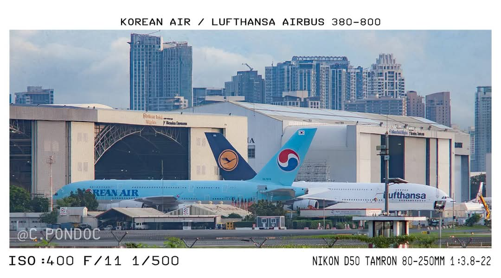
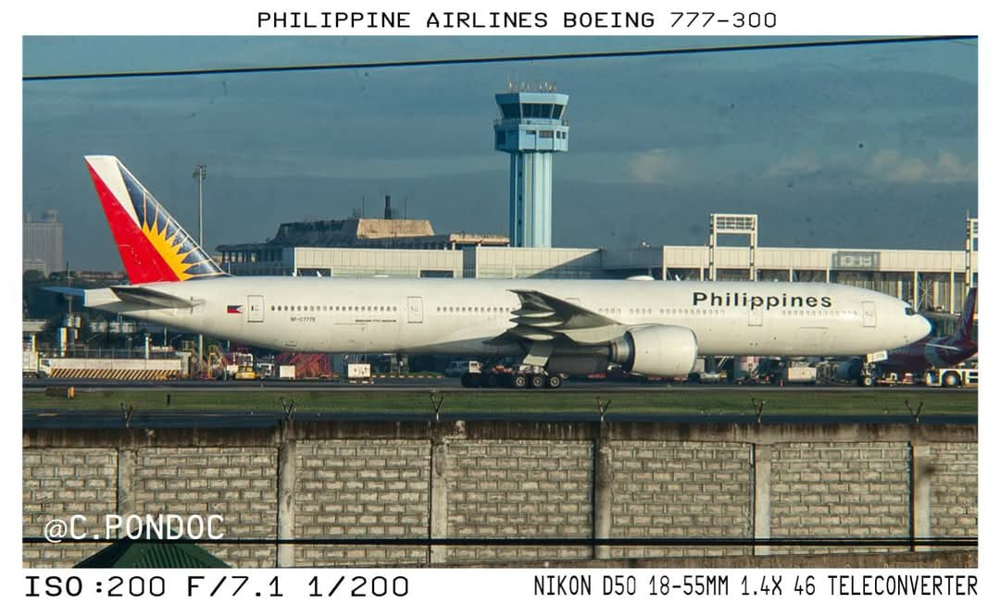
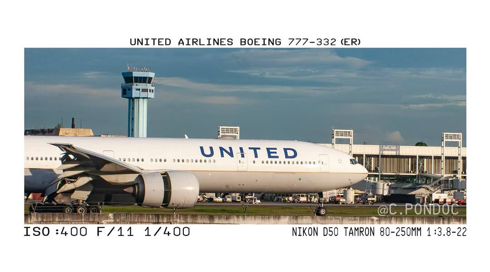
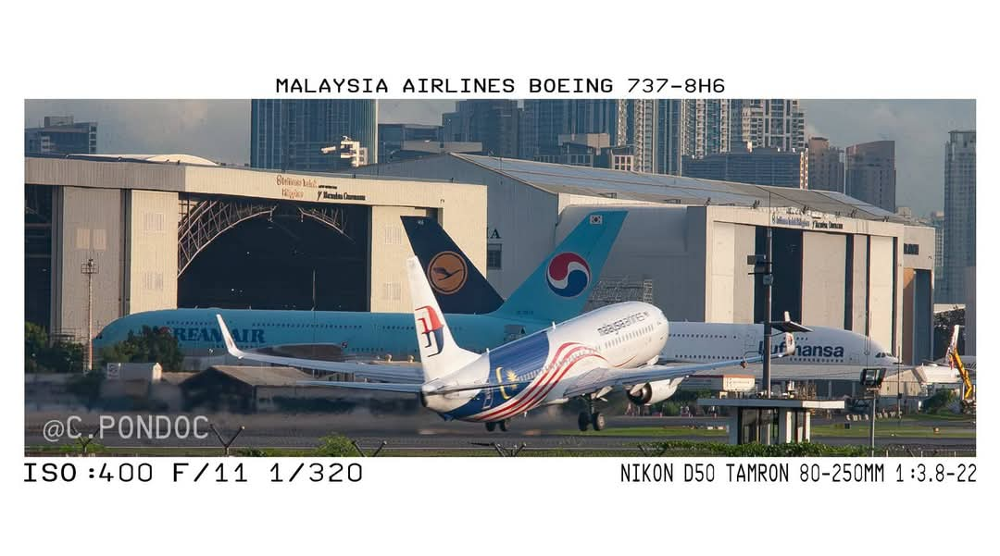
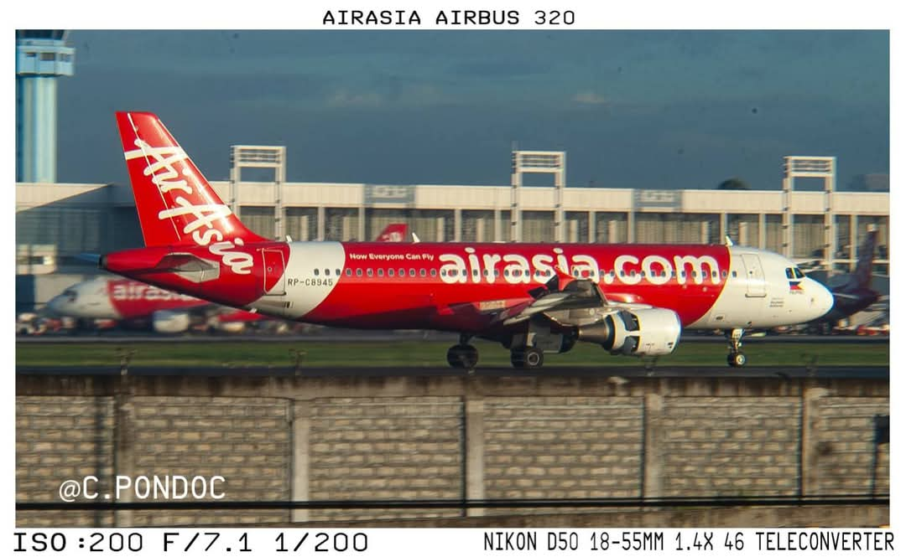
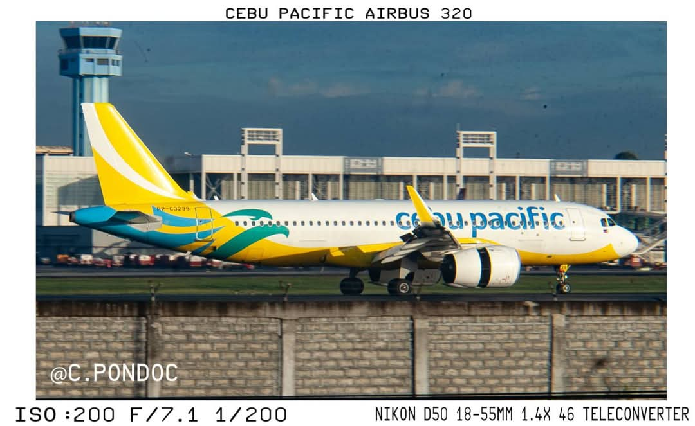

Flight CrewCP 303
- Name
- Cristopher Pondoc
- Role
- Spotter / Sim pilot / Photographer
- Camera
- Nikon D50
Flight CP 303 / Sim only
Cristopher
I photograph aircraft from the ground and fly them in a simulator. Real-world flight training is still on the wish list.
I'm an aspiring airline pilot who spends time by the runway with a camera, and the rest of it in the virtual cockpit.
Want to talk planes, photography or a project? Reach me on LinkedIn or GitHub.

Airbus A380-800

Boeing 777-300

Boeing 777-332(ER)

Boeing 737-8H6

Airbus A320

Airbus A320
I have a strong interest in aviation and love taking pictures of aircraft. Every frame in the log above was shot on a Nikon D50, either with a kit lens and teleconverter or a Tamron 80-250mm.
Placeholder
Add a few lines in your own words: what got you into aviation, your favorite aircraft, and where you like to spot.
For now, all of my flying happens in a flight simulator.
Real-world flight training
LOCKED: NOT YET SCHEDULED